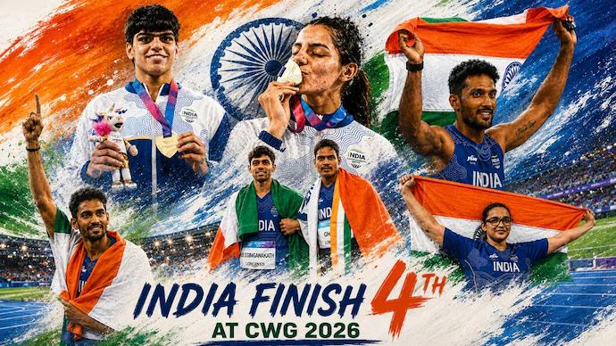
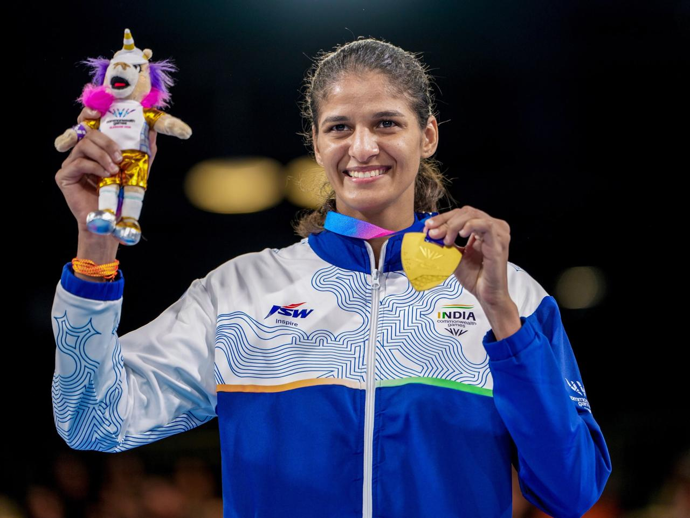

Issue 01 ✦ CWG Special ✦ August 2026
NEWS
LETTER
India shines at the Commonwealth Games,
finishing among the top nations with
an impressive medal haul across sports.
Exclusive coverage of India's Commonwealth Games journey featuring medal winners, records, highlights and inspiring stories.
India delivered one of its finest Commonwealth Games campaigns with outstanding performances across multiple disciplines. The contingent secured medals in athletics, wrestling, boxing and badminton, showcasing remarkable consistency throughout the tournament.
Several young athletes impressed on the international stage, while experienced champions once again proved their class under pressure. Their determination and teamwork earned widespread appreciation from fans across the country.
India concluded the 2026 Commonwealth Games in Glasgow with an impressive fourth-place finish, winning a total of 39 medals—13 Gold, 17 Silver and 9 Bronze. The contingent delivered remarkable performances across boxing, athletics, weightlifting, judo and para sports.
Indian boxers created history by securing a record 10 medals, including 7 gold medals, making it the nation's best-ever boxing campaign at the Commonwealth Games. India also achieved its strongest-ever performances in judo and para sports, highlighting the country's growing depth across multiple disciplines.

Boxing proved to be India's most successful sport at the Games, contributing a record 10 medals, including 7 Gold, 2 Silver and 1 Bronze. The outstanding performance accounted for more than half of India's total gold medals and played a decisive role in the nation's fourth-place finish. The historic campaign highlighted India's growing dominance in international boxing and strengthened hopes for future success at the Asian Games and Olympic competitions.
